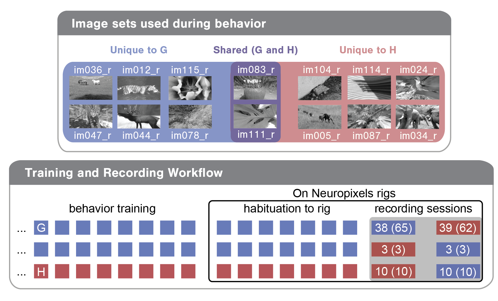

Visual Behavior Neuropixels Dataset#
The main entry point to the VBN dataset is the VisualBehaviorNeuropixelsProjectCache class. This class is responsible for downloading any requested data or metadata as needed and storing it in well known locations. For detailed info about how to access this data, check out this tutorial
We begin by importing the VisualBehaviorNeuropixelsProjectCache class.
import pandas as pd
import os
from allensdk.brain_observatory.behavior.behavior_project_cache.\
behavior_neuropixels_project_cache \
import VisualBehaviorNeuropixelsProjectCache
/opt/envs/allensdk/lib/python3.8/site-packages/tqdm/auto.py:21: TqdmWarning: IProgress not found. Please update jupyter and ipywidgets. See https://ipywidgets.readthedocs.io/en/stable/user_install.html
from .autonotebook import tqdm as notebook_tqdm
Now we can specify our cache directory and set up the cache.
# this path should point to the location of the dataset on your platform
cache_dir = '/root/capsule/data/'
cache = VisualBehaviorNeuropixelsProjectCache.from_local_cache(
cache_dir=cache_dir, use_static_cache=True)
We can use the VisualBehaviorNeuropixelsProjectCache to explore the parameters of this dataset. Let’s start by examining the cache metadata tables.
VBN Metadata#
The data manifest comprises 5 tables:
ecephys_sessions_table(64 kB)behavior_sessions_table(531 kB)units_table(130 MB)probes_table(127 kB)channels_table(28 MB)
The ecephys_sessions_table contains metadata for every Neuropixels recording session in the dataset. We attempted to insert 6 probes for each experiment, but occasionally individual insertions failed. The probe_count column tells you how many probes were inserted for a given session. The structure_acronyms column indicates which brain areas were targeted. For the majority of mice, there are two recording sessions. These were run on consecutive days with two different image sets, G and H. The experience_level column tells you whether the image set used for a particular recording was the same as the training image set (Familiar), or different from the training image set (Novel).
The behavior_sessions_table contains metadata for each behavior session. Some behavior sessions have Neuropixels data associated with them, while others took place during training in the behavior facility. The different training stages that mice progressed through are described by the session_type.
The units_table contains metadata for every unit in the release. Each unit can be linked to the corresponding recording session, probe and channel by the ecephys_session_id, ecephys_probe_id and ecephys_channel_id columns. This table also contains a number of helpful quality metrics, which can be used to filter out contaminated units before analysis. For more guidance on how to use these metrics, check out this tutorial.
The probes_table contains metadata for each probe insertion.
The channels_table contains metadata for each channel recorded during an ephys session. This table provides useful info about where a particular channel is located in the Allen Common Coordinate Framework as well as it’s relative position on the probe.
Now let’s look at each of these tables in more detail to get a better sense of the dataset.
Ecephys sessions table#
First, let’s load the ecephys_sessions_table and print the columns:
ecephys_sessions_table = cache.get_ecephys_session_table()
ecephys_sessions_table.columns
Index(['behavior_session_id', 'date_of_acquisition', 'equipment_name',
'session_type', 'mouse_id', 'genotype', 'sex', 'project_code',
'age_in_days', 'unit_count', 'probe_count', 'channel_count',
'structure_acronyms', 'image_set', 'prior_exposures_to_image_set',
'session_number', 'experience_level', 'prior_exposures_to_omissions',
'file_id', 'abnormal_histology', 'abnormal_activity'],
dtype='object')
This table gives us lots of useful metadata about each recording session, including the genotype, sex and age of the mouse that was run, what brain areas were recorded and some important info about the stimulus.
To demystify a few of these columns, let’s briefly review the experimental design. Each mouse was trained with one of two image sets (G or H). For the majority of mice, we recorded two sessions: one with the trained ‘familiar’ image set and one with a ‘novel’ image set. Note that two of the eight images were shared across these two image sets as diagrammed below for an example mouse. For this mouse, image set G (images on blue and purple backgrounds) was used in training and was therefore ‘familiar’, while image set H (the two holdover images on purple background plus six novel images on red background) was ‘novel’.

Each recording session can be defined by a few parameters, including the image_set used (G or H), the experience_level of the mouse (indicating whether the mouse had seen the image set in previous training sessions) and the session_number (indicating whether it was the first or second recording day for the mouse). In bottom bubble of the above diagram, you can see the three different training/recording trajectories mice in this dataset took:
Train on G; see G on first recording day; see H on second recording day
Train on G; see H on first recording day; see G on second recording day
Train on H; see H on first recording day; see G on second recording day
The numbers in the recording session cells indicate how many of each session type exist in this dataset. The first number is what the SDK returns by default. The second number (in parentheses) is what the SDK returns without filtering for abnormalities (see below as well as the Data Access tutorial).
Here is a brief description of each column:
- abnormal_activity
nan or list List of experiment time stamps when possible epileptic activity was noted.
- abnormal_histology
nan or list List of brain areas where possible damage was noted in post-hoc imaging.
- age_in_days
int age of mouse in days
- behavior_session_id
int unique identifier for a behavior session
- channel_count
float total number of channels on all probes used for experiment
- date_of_acquisition
date time object date and time of data acquisition, yyyy-mm-dd hh:mm:ss.
- ecephys_session_id
int unique identifier for an ecephys recording session
- equipment_name
string identifier for equipment data was collected on
- experience_level
string ‘Familiar’: image set mouse was trained on, ‘Novel’: not the image set the mouse was trained on.
- file_id
int lookup id to retrieve NWB file from S3 or the local cache.
- genotype
string full genotype of transgenic mouse
- image_set
string image set shown for a particular behavior session or ephys session
- mouse_id
int unique identifier for a mouse
- prior_exposures_to_image_set
float 64 number of prior sessions (during training or ophys) where the mouse was exposed to the image set shown in the current session. Starts at 0 for first exposure
- prior_exposures_to_omissions
int 64 number of sessions where the mouse was exposed to omissions. Starts at 0 for first exposure. Omissions do not occur during training
- prior_exposures_to_session_type
int 64 Number of previous sessions (during training or ophys) where the mouse was exposed to the current session type. Starts at 0 for first exposure
- project_code
string ‘NeuropixelVisualBehavior’–Project this session belongs to
- session_number
float 64 [1, 2] Indicates whether this session was the first or second recording day for the mouse. Takes values ‘1’ or ‘2’.
- session_type
string Visual stimulus type displayed during behavior session
- sex
string [‘M’, ‘F’] Sex of the mouse
- structure_acronyms
string List of CCF structures recorded during this experiment
- unit_count
float number of units recorded during this
Behavior Sessions Table#
In this dataset, mice are trained on a visual change detection task. This task involves a continuous stream of stimuli, and mice learn to lick in response to a change in the stimulus identity to earn a water reward. There are different stages of training in this task, described below. The metadata for each behavior session in the dataset can be found in the behavior_sessions_table and can be used to build a training history for each mouse. Importantly, this table lists all of the behavior sessions for each mouse from the beginning of its training.
Let’s load the table and take a look:
behavior_sessions = cache.get_behavior_session_table()
print(f"Total number of behavior sessions: {len(behavior_sessions)}")
behavior_sessions.head()
Total number of behavior sessions: 3424
| equipment_name | genotype | mouse_id | sex | age_in_days | session_number | prior_exposures_to_session_type | prior_exposures_to_image_set | prior_exposures_to_omissions | ecephys_session_id | date_of_acquisition | session_type | image_set | file_id | |
|---|---|---|---|---|---|---|---|---|---|---|---|---|---|---|
| behavior_session_id | ||||||||||||||
| 1055198750 | NP.1 | wt/wt | 531237 | F | 158 | 45 | 5 | 38.0 | 0 | 1.055182e+09 | 2020-10-07 09:40:30.407000+00:00 | HABITUATION_5_images_G_handoff_ready_3uL_reward | G | 1022 |
| 1052162513 | NP.1 | Vip-IRES-Cre/wt;Ai32(RCL-ChR2(H134R)_EYFP)/wt | 530862 | M | 143 | 41 | 2 | 29.0 | 0 | 1.051331e+09 | 2020-09-18 10:18:25.503000+00:00 | HABITUATION_5_images_G_handoff_ready_3uL_reward | G | 1023 |
| 1056100734 | NP.1 | wt/wt | 531237 | F | 163 | 48 | 8 | 41.0 | 0 | 1.056090e+09 | 2020-10-12 12:31:57.133000+00:00 | HABITUATION_5_images_G_handoff_ready_3uL_reward | G | 1024 |
| 1055397049 | NP.1 | wt/wt | 531237 | F | 159 | 46 | 6 | 39.0 | 0 | 1.055387e+09 | 2020-10-08 10:46:16.623000+00:00 | HABITUATION_5_images_G_handoff_ready_3uL_reward | G | 1025 |
| 1052162543 | NP.1 | wt/wt | 533537 | M | 128 | 30 | 0 | 23.0 | 0 | 1.052096e+09 | 2020-09-22 10:54:33.351000+00:00 | HABITUATION_5_images_G_handoff_ready_5uL_reward | G | 1026 |
You can see that there are many more sessions here than in the ecephys_sessions_table. But the columns are defined in the same way.
To see how to use this table to look at the training trajectory for one mouse, check out this tutorial
Units Table#
The units metadata table contains important quality and waveform metrics for every unit recorded in this dataset. For more info about how to use these quality metrics to filter units for analysis, check out this tutorial
Let’s grab this table and take a look at the columns:
units = cache.get_unit_table()
print(f'This dataset contains {len(units)} total units')
units.head()
This dataset contains 319013 total units
| ecephys_channel_id | ecephys_probe_id | ecephys_session_id | amplitude_cutoff | anterior_posterior_ccf_coordinate | dorsal_ventral_ccf_coordinate | left_right_ccf_coordinate | cumulative_drift | d_prime | structure_acronym | ... | valid_data | amplitude | waveform_duration | waveform_halfwidth | PT_ratio | recovery_slope | repolarization_slope | spread | velocity_above | velocity_below | |
|---|---|---|---|---|---|---|---|---|---|---|---|---|---|---|---|---|---|---|---|---|---|
| unit_id | |||||||||||||||||||||
| 1157005856 | 1157001834 | 1046469925 | 1046166369 | 0.500000 | 8453.0 | 3353.0 | 6719.0 | 140.32 | 6.088133 | MB | ... | True | 286.132665 | 0.151089 | 0.096147 | 0.310791 | -0.227726 | 0.961313 | 20.0 | -0.457845 | NaN |
| 1157005853 | 1157001834 | 1046469925 | 1046166369 | 0.323927 | 8453.0 | 3353.0 | 6719.0 | 239.76 | 4.635583 | MB | ... | True | 181.418835 | 0.357119 | 0.192295 | 0.531490 | -0.150522 | 0.732741 | 30.0 | 2.060302 | -2.060302 |
| 1157005720 | 1157001786 | 1046469925 | 1046166369 | 0.044133 | 8575.0 | 3842.0 | 6590.0 | 263.32 | 5.691955 | MRN | ... | True | 180.866205 | 0.521943 | 0.178559 | 0.612217 | -0.024239 | 0.539687 | 80.0 | 0.000000 | 0.863364 |
| 1157006074 | 1157001929 | 1046469925 | 1046166369 | 0.000583 | 8212.0 | 2477.0 | 6992.0 | 154.64 | 6.049284 | NOT | ... | True | 574.984215 | 0.343384 | 0.192295 | 0.470194 | -0.356670 | 2.258649 | 40.0 | 1.373534 | 0.000000 |
| 1157006072 | 1157001929 | 1046469925 | 1046166369 | 0.500000 | 8212.0 | 2477.0 | 6992.0 | 242.58 | 4.745499 | NOT | ... | True | 315.794115 | 0.329648 | 0.164824 | 0.488276 | -0.210010 | 1.320270 | 70.0 | 0.412060 | 0.343384 |
5 rows × 34 columns
For more information about many of the metrics included in this table and how to use them to guide your analysis, see our quality metrics tutorial. For now, here’s a brief description of each column:
General Metadata
ecephys_channel_id: unique ID of channel on which unit’s peak waveform occurred
ecephys_probe_id: unique ID for probe on which unit was recorded
ecephys_session_id: unique ID for session during which unit was recorded
anterior_posterior_ccf_coordinate: CCF coord in the AP axis
dorsal_ventral_ccf_coordinate: CCF coord in the DV axis
left_right_ccf_coordinate: CCF coord in the left/right axis
structure_acronym: CCF acronym for area to which unit was assigned
structure_id: CCF structure ID for the area to which unit was assigned
probe_horizontal_position: Horizontal (perpindicular to shank) probe position of each unit’s peak channel in microns
probe_vertical_position: Vertical (along shank) probe position of each unit’s peak channel in microns
Waveform metrics: Look here for more detail on these metrics and the code that computes them. For the below descriptions the ‘1D waveform’ is defined as the waveform on the peak channel. The ‘2D waveform’ is the waveform across channels centered on the peak channel.
amplitude: Peak to trough amplitude for mean 1D waveform in microvolts
waveform_duration: Time from trough to peak for 1D waveform in milliseconds
waveform_halfwidth: Width of 1D waveform at half-amplitude in milliseconds
PT_ratio: Ratio of the max (peak) to the min (trough) amplitudes for 1D waveform
recovery_slope: Slope of recovery of 1D waveform to baseline after repolarization (coming down from peak)
repolarization_slope: Slope of repolarization of 1D waveform to baseline after trough
spread: Range of channels for which the spike amplitude was above 12% of the peak channel amplitude
velocity_above: Slope of spike propagation velocity traveling in dorsal direction from soma (note to avoid infinite values, this is actaully the inverse of velocity: ms/mm)
velocity_below: Slope of spike propagation velocity traveling in ventral direction from soma (note to avoid infinite values, this is actually the inverse of velocity: ms/mm)
snr: signal-to-noise ratio for 1D waveform
Quality metrics: Look here for more detail on these metrics and the code that computes them.
amplitude_cutoff: estimate of miss rate based on amplitude histogram (ie fraction of spikes estimated to have been below detection threshold)
cumulative_drift: cumulative change in spike depth along probe throughout the recording
d_prime: classification accuracy based on LDA
firing_rate: Mean firing rate over entire recording
isi_violations: Ratio of refractory violation rate to total spike rate
isolation_distance: Distance to nearest cluster in Mahalanobis space
l_ratio: The Mahalanobis distance and chi-squared inverse cdf are used to find the probability of cluster membership for each spike.
max_drift: Maximum change in unit depth across recording
nn_hit_rate: Fraction of nearest neighbors in PCA space for spikes in unit cluster that are also in unit cluster
nn_miss_rate: Fraction of nearest neighbors for spikes outside unit cluster than are in unit cluster
presence_ratio: Fraction of time during session for which a unit was spiking
silhouette_score: Standard metric for cluster overlap, computed in PCA space
quality: Label assigned based on waveform shape as described here. Either ‘good’ for physiological waveforms or ‘noise’ for artifactual waveforms.
Probes Table#
The probes table contains useful info about every probe insertion in the dataset.
probes = cache.get_probe_table()
probes.head()
| ecephys_session_id | name | sampling_rate | lfp_sampling_rate | phase | has_lfp_data | unit_count | channel_count | structure_acronyms | file_id | |
|---|---|---|---|---|---|---|---|---|---|---|
| ecephys_probe_id | ||||||||||
| 1044506933 | 1044385384 | probeB | 30000.178402 | 2500.014867 | 1.0 | True | 701 | 384 | ['CA1', 'DG', 'LP', 'POL', 'PoT', 'VISpm', 'ro... | 0 |
| 1044506934 | 1044385384 | probeC | 30000.049852 | 2500.004154 | 1.0 | True | 307 | 384 | ['MB', 'MRN', 'POST', 'SCig', 'VISp', 'root'] | 1 |
| 1044506935 | 1044385384 | probeD | 30000.029115 | 2500.002426 | 1.0 | True | 521 | 384 | ['CA1', 'CA3', 'DG', 'LGv', 'MB', 'TH', 'VISl'... | 2 |
| 1044506936 | 1044385384 | probeE | 30000.075851 | 2500.006321 | 1.0 | True | 282 | 384 | ['CA1', 'DG', 'MB', 'MGd', 'MGm', 'MRN', 'SGN'... | 3 |
| 1044506937 | 1044385384 | probeF | 29999.959578 | 2499.996631 | 1.0 | True | 368 | 384 | ['CA1', 'DG', 'LP', 'MRN', 'POL', 'PoT', 'SGN'... | 4 |
Here’s a brief description of every column:
- ecephys_probe_id
int Unique identifier for probe insertion
- ecephys_session_id
int Unique identifier for ecephys session for this insertion
- name
string Name of probe indicating which of the six probe positions this probe filled (A-F).
- sampling_rate
float Sampling rate for AP band data
- has_lfp_data
bool Flag indicating whether LFP data was collected on this probe
- lfp_sampling_rate
float Sampling rate for LFP data
- phase
float Neuropixels generation for this probe (all probes in this dataset are Neuropixels 1.0)
- unit_count
int Number of units recorded for this insertion
- channel_count
int Number of channels available for recording on this insertion
- structure_acronyms
string List of areas recorded for this probe insertion
Channels Table#
Metadata for every probe channel recorded in this dataset. This table can be merged with the units table to get CCF area assignments for each unit.
channels = cache.get_channel_table()
channels.head()
| ecephys_probe_id | ecephys_session_id | probe_channel_number | probe_vertical_position | probe_horizontal_position | anterior_posterior_ccf_coordinate | dorsal_ventral_ccf_coordinate | left_right_ccf_coordinate | structure_acronym | unit_count | valid_data | |
|---|---|---|---|---|---|---|---|---|---|---|---|
| ecephys_channel_id | |||||||||||
| 1049365509 | 1048089911 | 1047969464 | 0 | 20.0 | 43.0 | 8445.0 | 4013.0 | 6753.0 | MRN | 0 | True |
| 1049365511 | 1048089911 | 1047969464 | 1 | 20.0 | 11.0 | 8443.0 | 4005.0 | 6755.0 | MRN | 5 | True |
| 1049365512 | 1048089911 | 1047969464 | 2 | 40.0 | 59.0 | 8441.0 | 3997.0 | 6757.0 | MRN | 0 | True |
| 1049365513 | 1048089911 | 1047969464 | 3 | 40.0 | 27.0 | 8439.0 | 3989.0 | 6759.0 | MRN | 5 | True |
| 1049365514 | 1048089911 | 1047969464 | 4 | 60.0 | 43.0 | 8438.0 | 3981.0 | 6761.0 | MRN | 7 | True |
Here are the columns:
- ecephys_channel_id
Unique identifier for each channel. This is the id used in the units
ecephys_channel_idcolumn.- ecephys_probe_id
int Unique identifier for probe insertion
- ecephys_session_id
int Unique identifier for ecephys session for this insertion
- anterior_posterior_ccf_coordinate
CCF coord in the AP axis
- dorsal_ventral_ccf_coordinate
CCF coord in the DV axis
- left_right_ccf_coordinate
CCF coord in the left/right axis
- structure_acronym
CCF acronym for area to which channel was assigned
- probe_horizontal_position
Horizontal (perpindicular to shank) probe position of each unit’s peak channel in microns
- probe_vertical_position
Vertical (along shank) probe position of each unit’s peak channel in microns
- probe_channel_number
Index of channel position on probe (0-383 with 0 at tip of probe)
- unit_count
int Number of units assigned to this channel